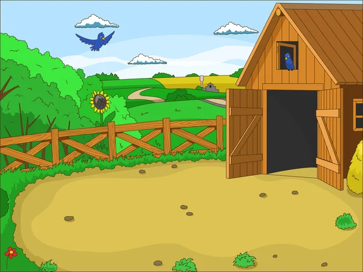

Crear Animales
En esta sección puedes agregar los animales que forman parted de la granja.
Ir al sitio
En esta sección puedes agregar los animales que forman parted de la granja.
Ir al sitioEn esta sección puedes configurar y administrar cada animal dentro de su respectivo corral
Ir al sitioEn esta sección se muestra los animales asignados en cada corral y su respectivo reporte.
Ir al sitio